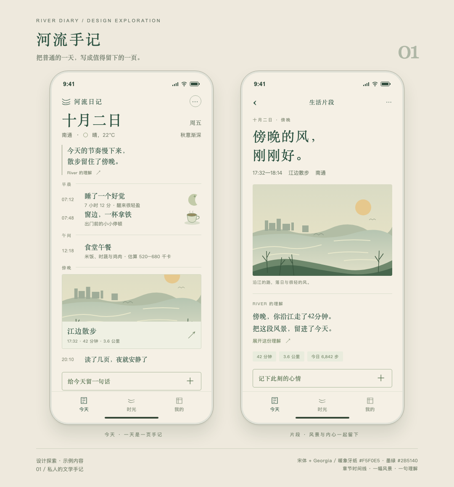
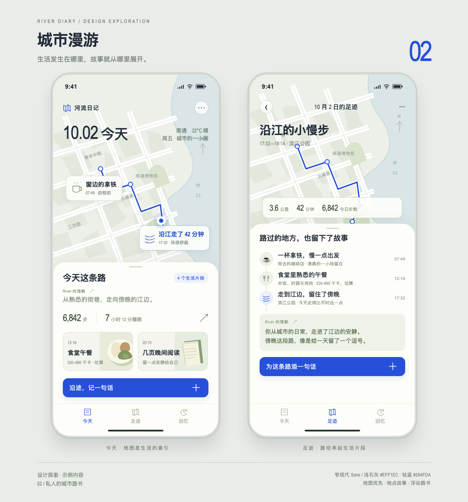
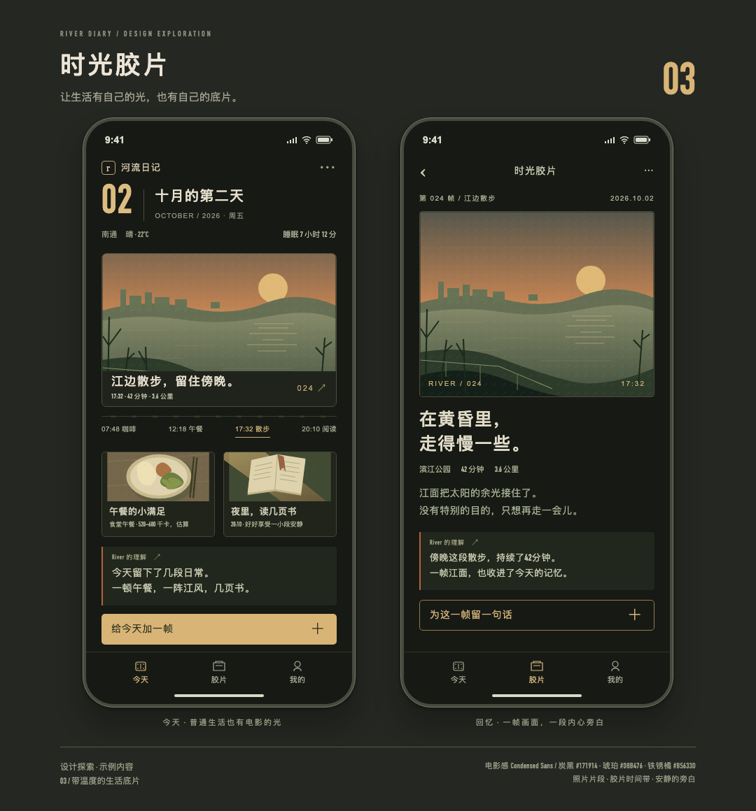
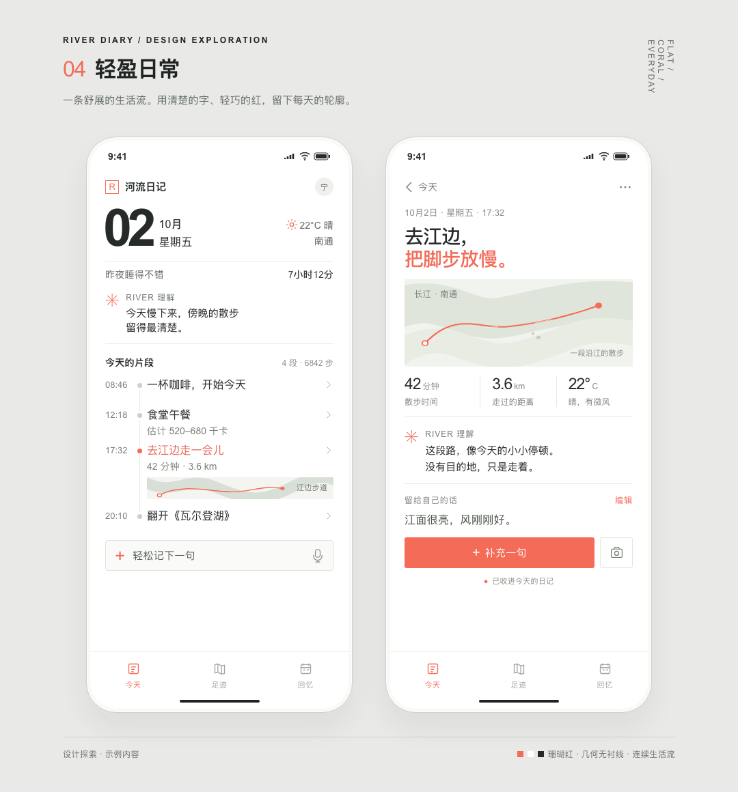
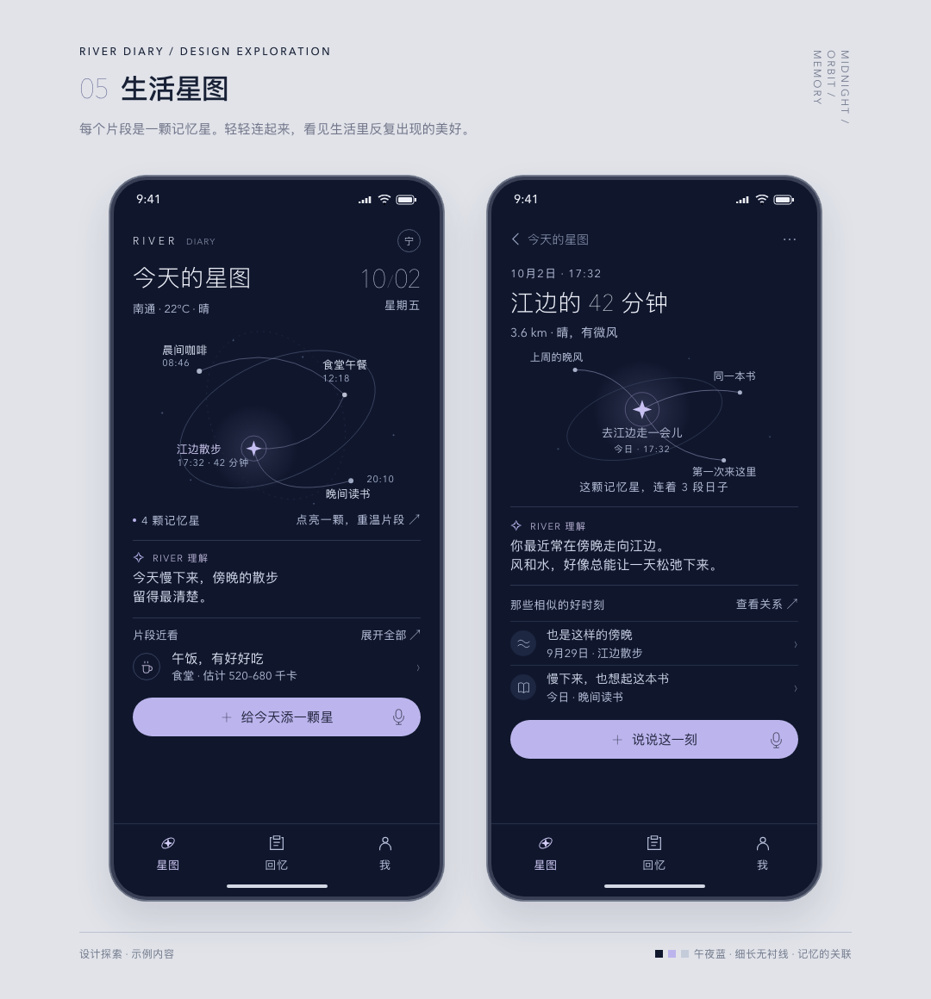
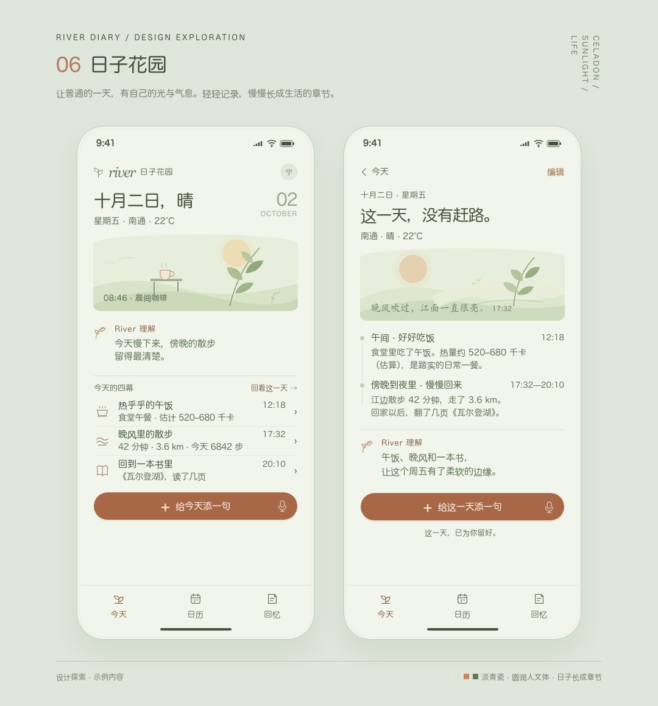
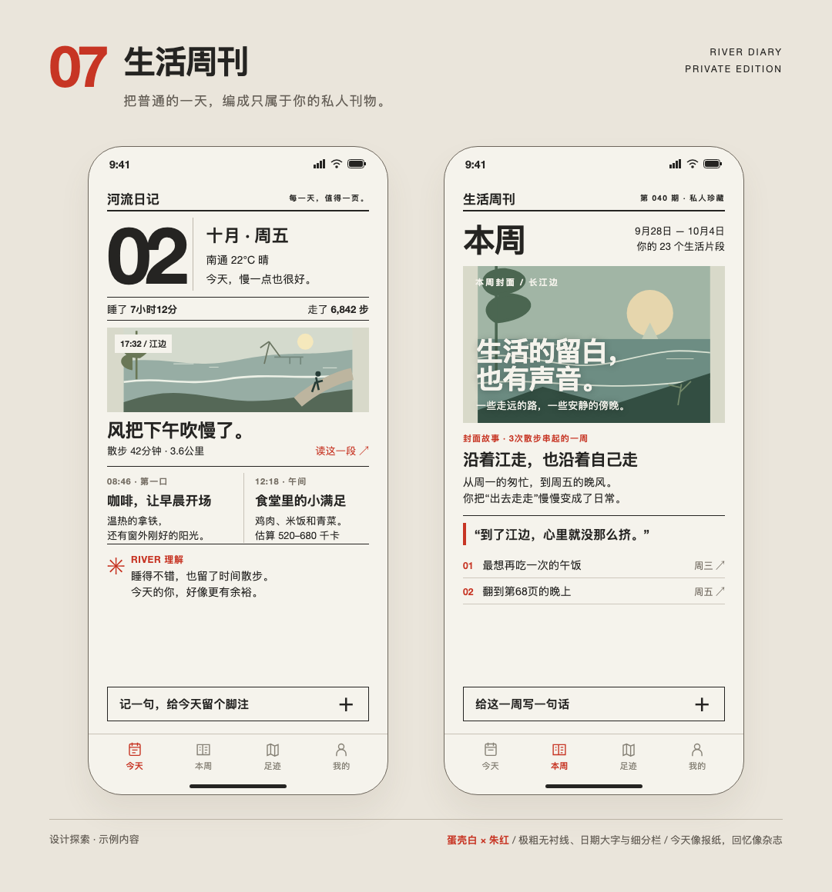
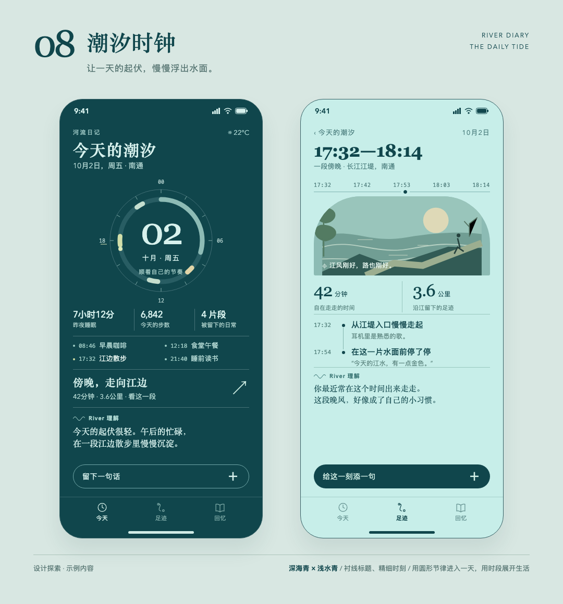
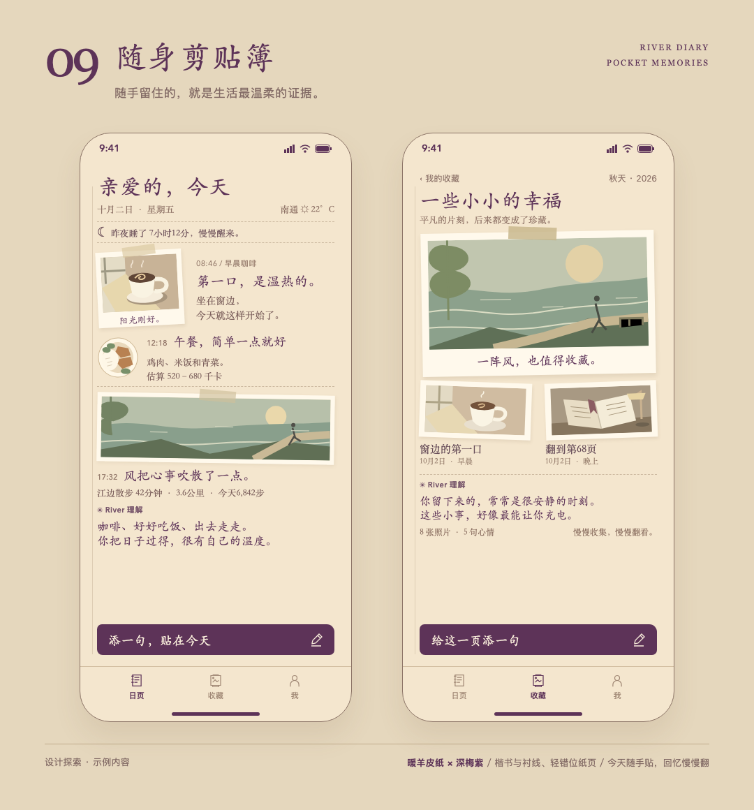
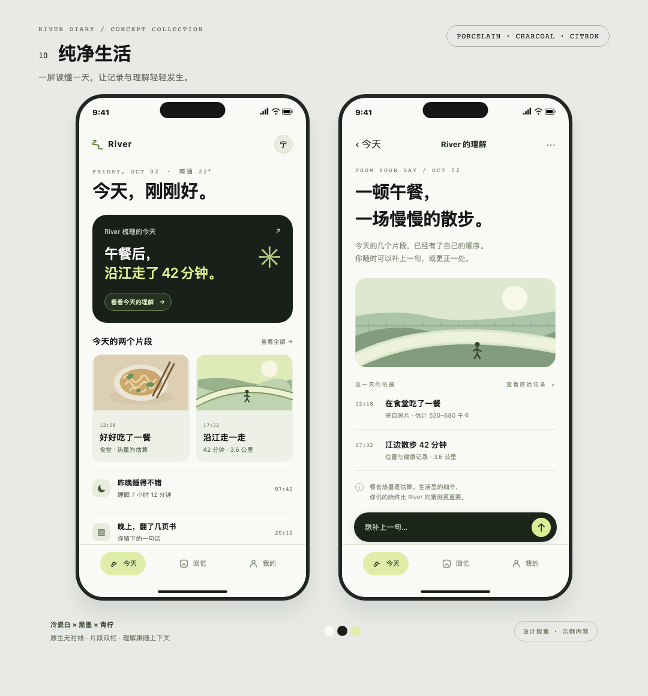

RIVER DIARY / 10 MOBILE DIRECTIONS
十种设计，看见你的生活。
每版两屏 · 不同的阅读方式与交互方向
设计探索 · 所有生活内容均为示例 / 2026.10.02
01河流手记

文学手记 · 章节式日常
02城市漫游

地图优先 · 地点与故事
03时光胶片

深色胶片 · 影像生活
04轻盈日常

清晰平面 · 连续生活流
05生活星图

安静星图 · 记忆关联
06日子花园

自然气息 · 生活章节
07生活周刊

私人周刊 · 每日与每周
08潮汐时钟

时间节奏 · 一天潮汐
09随身剪贴簿

纸张收藏 · 照片与短句
10纯净生活

双栏片段 · 上下文理解